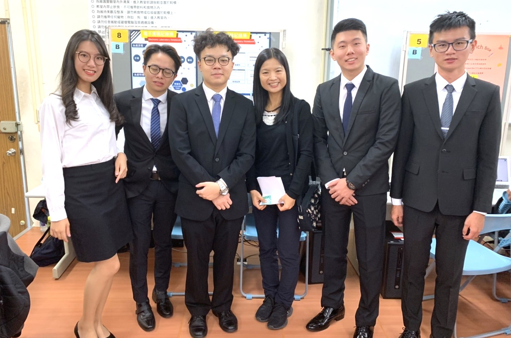

關於我
My Profile
自傳
My Autobiography
學習經歷
My Learning Experience
2020/9-2022/8 朝陽科技大學資訊管理系研究所畢業

在研究所的兩年當中，可以說是人生當中收獲最多的兩年。研究主要探討影響玩家持續購買對戰型免費遊戲之戰鬥通行證意圖的因素。另外除了學業上碩士班的課程非常扎實，每門課都有許多報告以及paper需要閱讀
學習更多的撰寫程式的觀念及學術界撰寫論文的方式外，
在高壓的學習過程中我更認清自己的缺點及讓我更了解自己未來的去向。除了學業上收獲很多之外，我亦同樣開始攝影作為興趣，當中更因為
攝影而認識了更多不同持份者的人成為朋友，讓我更勇敢與他人交流更在不同的前輩當中學習。另外，與過去於FB社群版主的朋友們成立台港澳的電競公司，主要以遊戲CSGO為主。在當中我成為公司與廠商溝通的角色，除了提升個人的表達能力外，更獲得工作的經驗。
有關連結:
電競公司EZK.GG網頁
個人攝影FB專頁
有關連結:
電競公司EZK.GG網頁
個人攝影FB專頁
2021/ 5 發表國際論文

2022 6th International Conference on E-Education, E-Business and E-Technology
Title: Exploring the Factors Influencing the Viewers’ Intention to Subscribe to Video Game Live Streaming: Using social support and subjective welling-being perspectives
雖然是第一次參加國際研討會，但因為過去大學專題的報告經驗讓我以輕鬆的狀態面對報告。在國際研討會當中更 因為出色的PPT整合及報告的流暢度獲得該次的最佳報告者
#網頁設計 #Adobe After Effects、Adobe Premiere #Adobe Photoshop、Adobe Illustrator、3DMax
Title: Exploring the Factors Influencing the Viewers’ Intention to Subscribe to Video Game Live Streaming: Using social support and subjective welling-being perspectives
雖然是第一次參加國際研討會，但因為過去大學專題的報告經驗讓我以輕鬆的狀態面對報告。在國際研討會當中更 因為出色的PPT整合及報告的流暢度獲得該次的最佳報告者
#網頁設計 #Adobe After Effects、Adobe Premiere #Adobe Photoshop、Adobe Illustrator、3DMax
2016/9-2020/6 大學畢業

資訊管理系(多媒體組)，讓我了解了前後端的開發能力。
大學主要學習關於設計方面Photoshop、Illustrator等，建模方面有MAYA、SketchUp等等。影音剪輯軟體方面Adobe After Effects、Adobe
Premiere等，並且學習了前端(html、CSS)、後端(PHP、物件導向以及資料庫概念)。
#網頁設計 #Adobe After Effects、Adobe Premiere #Adobe Photoshop、Adobe Illustrator、3DMax
#網頁設計 #Adobe After Effects、Adobe Premiere #Adobe Photoshop、Adobe Illustrator、3DMax
2019/12 朝陽科技大學資訊學院畢業專題第一名

很高興於各組員的努力之下，我們的專題在完整度、專業程度上被受校外的教授認同並獲得資訊學院的第一名 ，
而在開發系統當中，我主動提出作為團隊的進度整合一員，對於系統的了解程度是最為完整而成為了主報告者外，而我所開發內容:
-會員系統 包括:登入 註冊 修改會員資料等
-各功能權限系統(可讓管理者自由選擇主及次功能至不同的會員群組)
-主頁多項式選單(依照管理者所批發的功能有所改變)
-實驗主頁面(整合不同功能)
-系統主頁(整合不同功能)
-設計不同頁面通用的Controller讓團隊方面獲得數據
#ERP #Laravel #MSSQL #SUM #SDD #SRS #php #Swift
-會員系統 包括:登入 註冊 修改會員資料等
-各功能權限系統(可讓管理者自由選擇主及次功能至不同的會員群組)
-主頁多項式選單(依照管理者所批發的功能有所改變)
-實驗主頁面(整合不同功能)
-系統主頁(整合不同功能)
-設計不同頁面通用的Controller讓團隊方面獲得數據
#ERP #Laravel #MSSQL #SUM #SDD #SRS #php #Swift
2019/12 朝陽科技大學資管系畢業專題第一名

大三的畢業專題選擇了一個產學合作的題目：Gi-ELN 電子實驗記錄簿管理系統，利用Laravel(5.8) MVC架構及MSSQL作主要的架構及資料庫。而系統是幫助實驗公司的檢驗人員將過往手動輸入的實驗報告及
數據轉為自動讀取及讀入系統當中，盡量減少於處理數據時出現輸入數據出錯的機會，大大降低數據出現誤差情況出現。並且可以讓相關實驗人員
可以互相分享彼此的實驗報告、數據，進一步提高了工作效率，也可以透過這個系統來監控實驗進度以及數據。當中系統擁有完整權限系統供管理人員
輕鬆以網頁頁面管理各用戶組別的權限及可看內容等等，以供企業內部使用。並獲得資管系的資訊學院的第一名 。
擔任角色:
-開發初期分享laravel MVC架構的操作方式
-整合各成員進度
-整個專題報告者
-副組長
#ERP #Laravel #MSSQL #SUM #SDD #SRS #php #Swift
擔任角色:
-開發初期分享laravel MVC架構的操作方式
-整合各成員進度
-整個專題報告者
-副組長
#ERP #Laravel #MSSQL #SUM #SDD #SRS #php #Swift
作品集
My Portfolio
聯絡資訊
Content